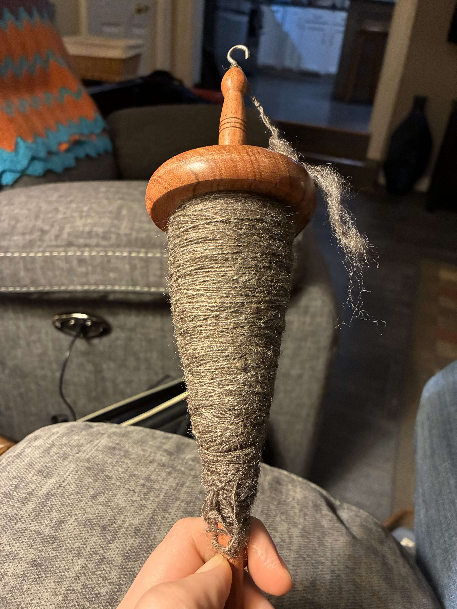
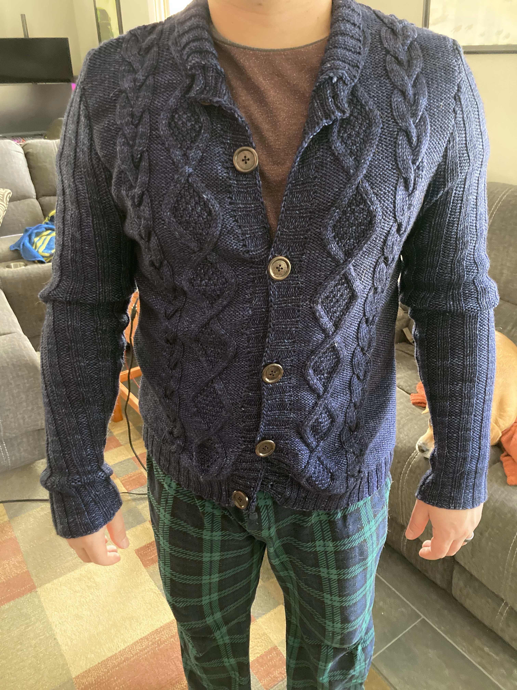
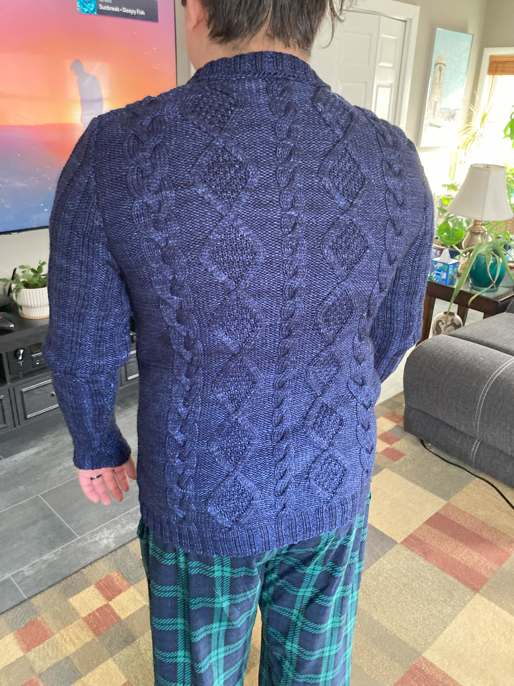
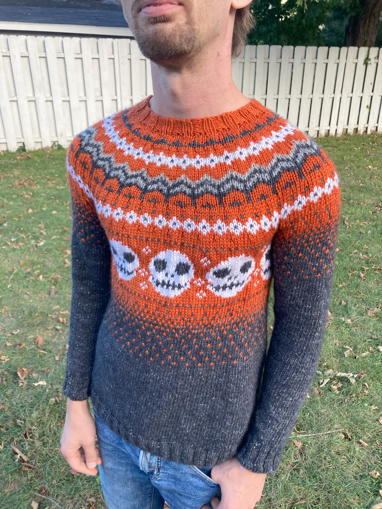
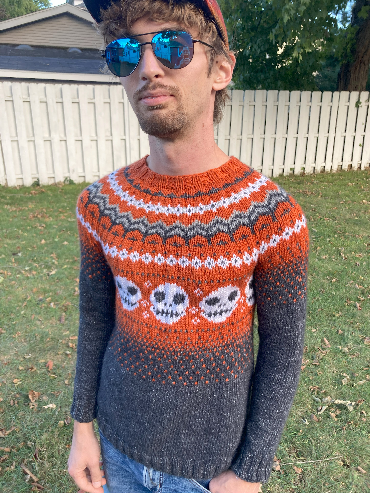
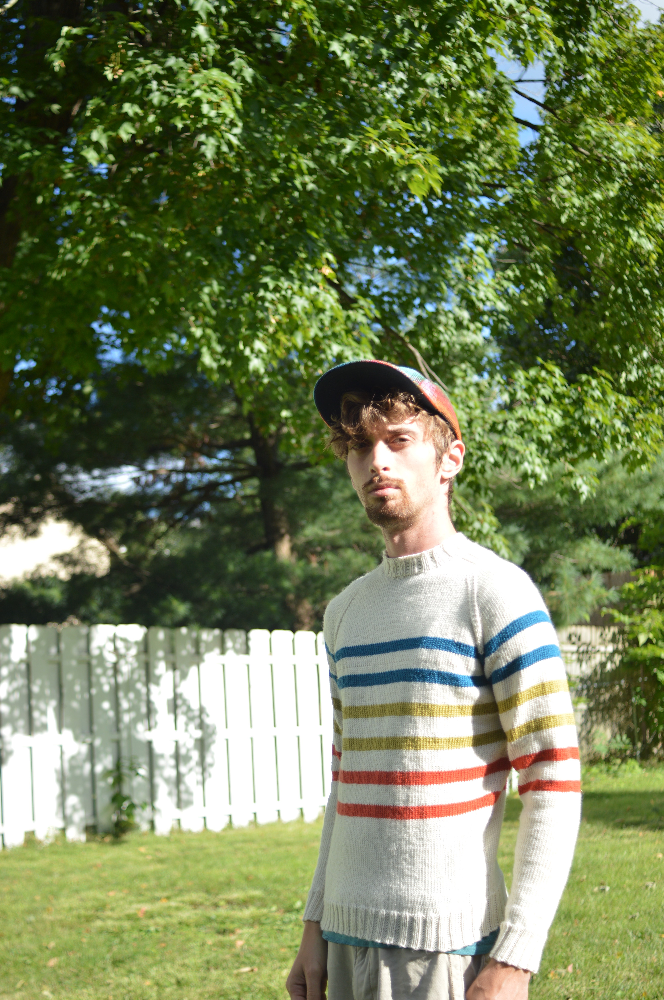
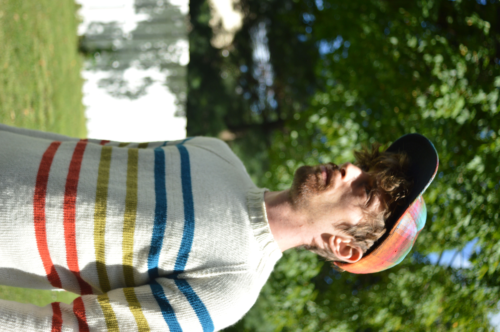
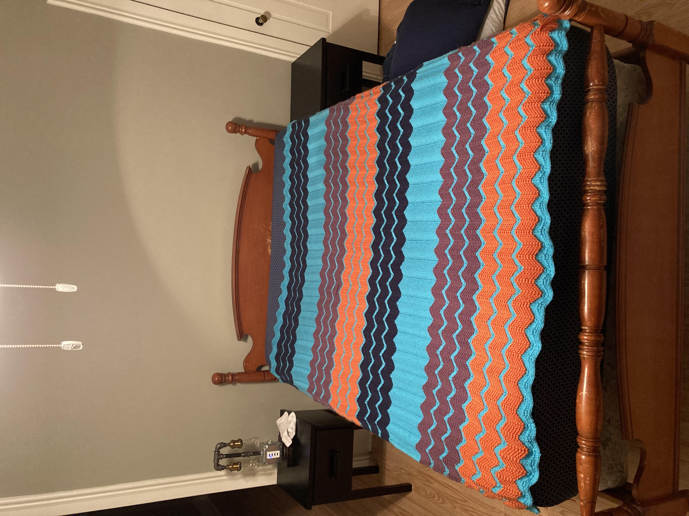

Bluey!
April 2026, I made these for my neice's birthday
So Braided Hat
April 2026, made with my first hand spun yarn done with a wheel from recycled wool
A Fine Sweater
January – March 2026 · Loops & Threads Impeccable yarn



Easy-Peasy Knitted Gloves
January 2026 · First finished object from handspun yarn!

Hatfield Scarf
December 2025 · Juniper Moon Farm Moonshine
Vintage Mens Cardigan
September – November 2025 · Nua Sport Rolling Bales


Umaro
May – September 2025 · Noro Tabi #11
Ribbon Weed
February 2025 · Red Heart All in One Flower Power, Bluebell




Lang Yarns 255-14 Cardigan
January 2025 · Malabrigo Rios Paris Night
Sancho Bears
Christmas 2024
Cabled Dog Sweater
2024 · Self-drafted, based on Arnold Jumper
Bubble Pup Sweater
2024 · Scrap yarn



Sabrina's Sweater
Halloween 2024 · Lion Brand Basic Stitch & Concept by Katia Cotton-Merino Tweed
Ainslie Hat
2024 · Rowan brand yarn

Merrin Blanket
Summer 2024
Little Pernille
Spring 2024
Fantastitch Hat
2024
Knautia Sweater
Fall 2023



Endeavour Sweater
Fall 2023 · Ella Rae Cashmereno Sport

Little Missy by Drops
Summer 2023


Winter's Night Enchantment by Drops
2023 · Juniper Moon Farms Moonshine
Petty Harbour Socks
2023 · Ella Rae Cashmerino Sport


Duxbury Point Pullover
2023 · Noro yarn

Tractor Blanky
2022
Artisan Gloves
2022
Easy-Peasy Knitted Gloves
2022 · Ella Rae Cashmerino Sport
The Arnold Jumper
2022 · First dog sweater · Red Heart Soft Clementine & Super Saver White
Donegal Sweater
2022 · My first sweater
Doodle Socks based on Michigan
2022 · Scraps


The Walt Painted Chevron Baby Blanket
2021 · Modified to be larger · Red Heart Soft navy, tangerine & turquoise; Loops and Threads violet